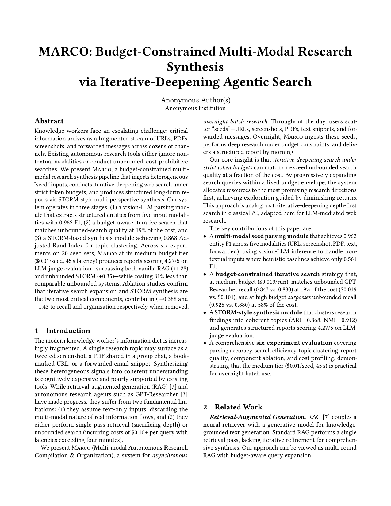
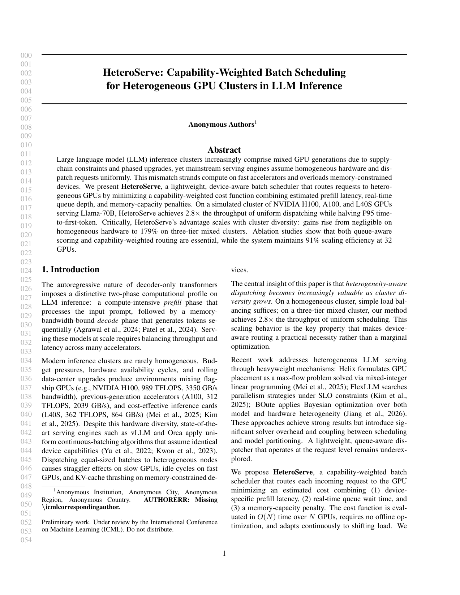
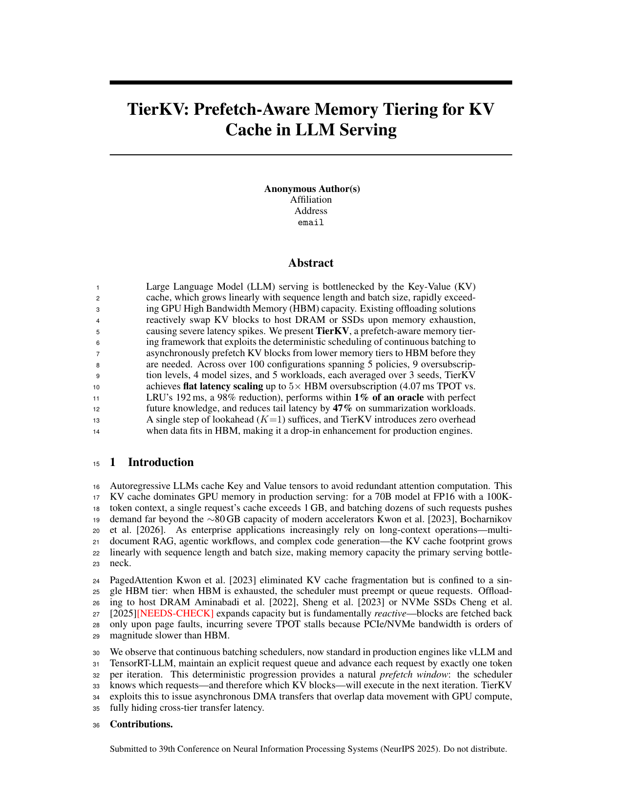

关于 ARK
ARK（Automatic Research Kit）是一个从想法到论文的科研自动化服务。给它一个研究想法和目标会议——ARK 负责文献调研、实验设计、代码执行、图表生成、LaTeX 撰写和迭代修改。六个专业 AI Agent 通过结构化流程协作，您可以随时通过 Web Dashboard 或 Telegram 掌控每一个关键节点。
自部署
支持 Linux 与 macOS。脚本会构建 conda 环境，装好 ARK + Claude Code + Gemini CLI，把仪表板装成 systemd --user 服务，并打印一个一次性的 magic-link 链接让你本地登录。不需要 SMTP，也不需要 Google OAuth。
curl -fsSL https://idea2paper.org/install.sh | bash--no-webapp 跳过本地仪表板
--no-research 跳过可选研究依赖
--prefix DIR 安装到自定义目录
--dry-run 仅预览不动手
脚本会提示输入 Gemini API key、Claude OAuth token、登录邮箱。装完点提示里的 magic link → 直接进 http://localhost:9527 仪表板。完整文档见 doc.html · 脚本见 install.sh。
实战成果
由 ARK 端到端生成的真实论文成果。

模板: EuroMLSys
模板: ICML
模板: NeurIPS会议模板
为什么选择 ARK
工作原理
研究、开发、审稿——持续迭代直至达到目标分数。
Deep Research 搜文献、理背景。
定方案、跑实验、分析结果、写初稿。
迭代优化，直到审稿分数达到阈值。
认识团队
六个专家 Agent，通过共享状态和结构化交接协作。
分析提案，生成深度调研查询，引导引用。
逐页评估论文，在多个维度上打分。
分类问题，创建修复任务，规划实验。
修改 LaTeX 论文和 Python 绘图脚本。
运行真实实验，收集并分析结果。
编写生产代码、测试和维护代码质量。